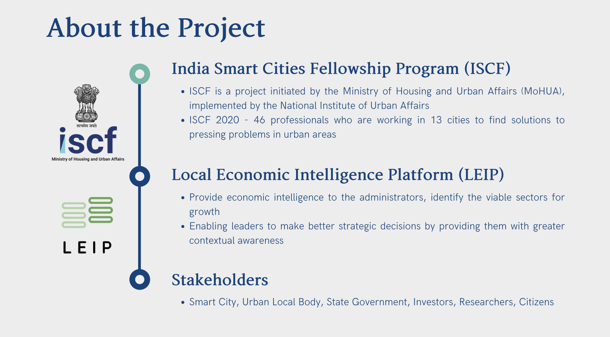

Build & research · 2020–21
LEIP
Local Economic Intelligence Platform · India Smart Cities Fellowship, Ministry of Housing & Urban Affairs
India’s 74th Constitutional Amendment handed cities the mandate to plan their own social and economic development. Three decades on, most still can’t: economic plans are written at state and national level, and no city-level instrument existed to read a local economy. LEIP was built to be that instrument.
What it does
A Rapid Economic Assessment scores the city against four pillars — human capital, investment, infrastructure and policy. GST transaction and e-way-bill data map the city’s economic clusters and their forward and backward linkages. Employment data feeds location quotients and shift-share analysis — the core toolkit of economic geography — to reveal where the city holds genuine comparative advantage. A decision-support system then turns all of it into intervention direction: which sectors are viable, which pillar needs work, and how exposed the economy is.
The pilot: Thiruvananthapuram, 3.8 million residents
The numbers told a sharp story. The city scored strongest on human capital (72/100) and weakest on infrastructure (43/100). Computer programming and consultancy showed a location quotient of 10.08 — ten times the state’s employment share, a genuinely specialised cluster. And with the top five sectors holding 70.97% of gross value added, the economy classed as low-resilience: too much riding on too few sectors. Each finding pointed at a decision a city government could actually take.

Why it matters for economic geography
LEIP is applied economic geography: cluster theory, location quotients and shift-share made operational inside a government, on live administrative data, for a real city. It is the working bridge between my LSE research on how governments sustain technology clusters and the AI-for-regulation systems I build today.
Team & credits
Built with Aman Singh Rajput and Radha Karmarkar. Mentors: Dr Debjani Ghosh (National Institute of Urban Affairs) and Dr Amit Kapoor (Institute for Competitiveness). Published as a book chapter, Data-Driven Decision Making for Urban Economies, Elsevier.